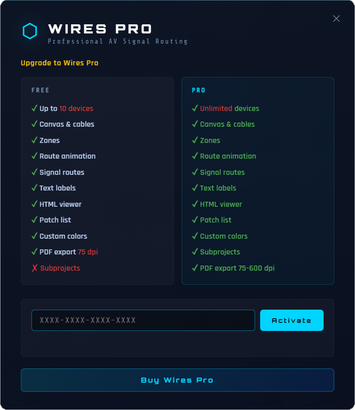

Build the devices
Import real equipment images, remove backgrounds, crop precisely and place connection points that match the physical ports.
Desktop software for professional AV systems
Wires is not a drawing tool. It is a precise offline workspace for broadcast, streaming, corporate AV, live production and installation teams who need readable signal documentation.
Hero video placeholder
The hero video area can later host a short capture showing a route being built, animated, filtered and exported.
How Wires works
A simple path for building professional AV documentation without turning the site into a manual.
Import real equipment images, remove backgrounds, crop precisely and place connection points that match the physical ports.
Create typed cables, define directions, handle bidirectional ports and organize the plan with zones, categories and cable filters.
Group cables into signal routes, reorder segments, manage splits and verify the path with animated light points on the canvas.
Deliver interactive HTML exports, PDF documents and pack lists for production crews, clients and technical archives.
Professional feature set
Wires keeps diagrams readable while preserving the details technicians need on real productions.
Document complete paths from source to destination, including multi-segment chains and route colors.
Animate one or several segments to confirm continuity, direction and routing logic at a glance.
Represent branches, alternate paths and cable direction changes without losing visual structure.
Use actual pictures of cameras, switchers, interfaces, racks and displays for instant recognition.
Clean imported images, crop them in the app and place ports directly on the device visual.
Filter by category, cable or zone while connected context remains visible at 35 percent opacity.
Navigate large broadcast or installation plans quickly without losing orientation.
Create your own connector families beyond SDI, HDMI, RJ45, Dante, XLR, USB, optical and more.
Reuse a rack, room or subsystem by importing one Wires project into another.
Work locally on site, in a venue, on a truck or in a studio without relying on cloud availability.
Use Wires in English, French or Spanish and switch language directly inside the application.
Keep the user guide close while the website remains a product story, not a reference manual.
Visual placeholders
Each slot can later receive a real application capture without changing the layout.
For a screenshot showing route segments, order, direction and split handling.
For background removal, crop handles and port placement.
For HTML, PDF and pack list delivery views.
Quick start videos
The site can launch with polished placeholders and receive final videos later.
Built for AV workflows
Map cameras, routers, switchers, encoders, multiviewers and monitors with clear signal flow.
Prepare a show before load-in, then export readable diagrams for technicians on site.
Document conference rooms, HDMI matrices, displays, audio systems and videoconferencing chains.
Explain sound, video, screens, cameras and streaming architecture to recurring technical teams.
Keep cameras, microphones, lighting, capture cards, interfaces and computers organized.
Deliver client-facing documentation that remains understandable after installation.
License activation
Download Wires once, test it immediately, then enter a license key inside the same software when you need Pro limits removed.
Free mode
Recommended for productions
Activated in the app

Documentation and resources
FAQ
No. Wires uses visual diagrams, but its purpose is signal documentation: devices, ports, cables, routes, direction, filters and exports.
Yes. Wires is a desktop Electron application designed to work locally, which is useful on productions, in venues and in technical rooms.
It creates an interactive standalone view of the plan, including device visuals and routes, so a setup can be shared or published without opening the app.
It is the same Wires application. Without a license, Wires runs in Free mode. Entering a Pro license removes the 10-device limit, enables high-resolution PDF export and unlocks sub-projects.
Download Wires, test it on a real setup, then activate Pro with a license key when your documentation needs to scale.